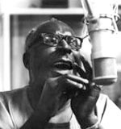
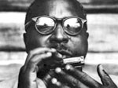
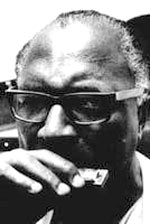

Сондерс (согласно другим источникам - Сэнфорд) Террелл (Saunders (Sanford) Terrell), родился 24 октября 1911 г., в Гринсборо (Greensboro), Северная Каролина, умер 12 марта 1986 г. в Нью-Йорке.
К 16 годам Сонни Терри в результате двух несчастных случаев практически утратил зрение - и по примеру многих других слепых блюзменов он всецело отдался увлечению губной гармоникой. После смерти отца Сонни Терри подрабатывал, играя на ярмарках, а в 1937 году встретил Блайнд Боя Фуллера (Blind Boy Fuller) и переехал жить в Дурхэм (Durham), где играл на улицах вместе с Фуллером, Слепым Гэри Дэвисом (Blind Gary Davis) и музицирующем на стиральной доске Джорджем Уошингтоном (George Washington) по прозвищу “Булл Сити Ред” (Bull City Red). В звукозаписи дебют Сонни Терри состоялся в 1937 году на сеансе Блайнд Боя Фуллера (Blind Boy Fuller), где он исполнил партию аккомпанирующей губной гармоники. Вокализированные тоны, которыми Терри сопровождал свою игру, усилены своеобразными фальцетными завываниями - это его фирменный прием.

Сонни Терри выступал в качестве аккомпаниатора Блайнд Боя Фуллера до смерти последнего в 1941 году. В 1938 году, когда Фуллер отбывал срок заключения в тюрьме, Сонни Терри заменил его, приняв по приглашению Джона Хэммонда (John Hammond) участие в концерте 1938 года “От спиричуэла к свингу”. Сложное переплетение игры и пения Сонни Терри произвели фурор, что, впрочем, на тот момент не сказалось на его карьере, хотя фирма грамзаписи “Okeh” и выпустила его записи в качестве самостоятельного артиста. В 1942 году Сонни Терри выступил на концерте в Вашингтоне, Федеральный округ Колумбия; и с ним в качестве аккомпанирующего гитариста и поводыря, по предложению их менеджера Дж. Б. Лонга (J.B. Long), отправился Брауни МакГи (Brownie McGhee). Оба исполнителя получили приглашение на работу в Нью-Йорке, где и поселились и сотрудничали затем долгие годы. В Нью-Йорке Сонни Терри много записывался как артист и в качестве аккомпаниатора на многих фирмах грамзаписи, ориентированных на чернокожую аудиторию. Первые нью-йоркские записи Сонни Терри сделаны под руководством Моузеса Эша (Moses Asch) на фирме “Фолкуэйз” (Folkways), ему аккомпанировал Вуди Гатри (Woody Guthrie).

К концу 50-х гг. Сонни Терри и Брауни МакГи стали давать концерты для белых любителей фолк-музыки, для которых они представляли свою музыку как “фолк-блюз”. Сторонники блюза как музыки чернокожих оценили этот факт как предательство. Тем не менее репертуар Сонни Терри и Брауни МакГи выявляет большое количество песен, записанных именно для чернокожей аудитории, а детские песни и сельская танцевальная музыка, записанная Сонни Терри на сеансах у Моузеса Эша бесценный по своей документальности материал.
В 60-е гг. Сонни Терри перестал петь фальцетом, его голос огрубел и стал весьма неблагозвучен. В его дуэте с МакГи также наметился разрыв - Брауни МакГи и Сонни Терри не стали близкими друзьями и в последние годы стали питать друг к другу активную неприязнь, доходило до перебранок на сцене. Но в истории блюза они останутся дуэтом, познакомивших с этим жанром публику по всему свету.
За два года до смерти Сонни Терри, с помощью Вилли Диксона (Willie Dixon) и Джонни Уинтера (Johnny Winter) записал сольный альбом “Whoopin'”, где попытался сблизить манеру исполнения Сонни Терри с более жесткой традицией блюза в электрической трактовке Уинтера.
periodic
bluesharp.inkharkov.com